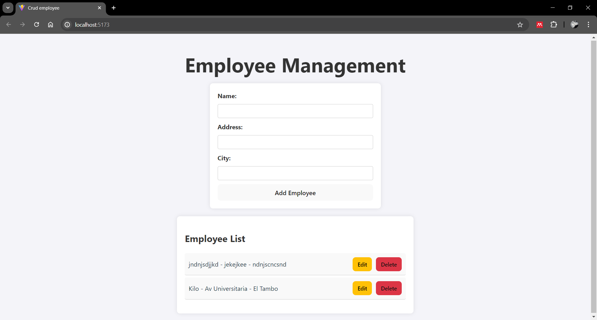

En este ejercicio, desarrollaremos una aplicación web CRUD (Crear, Leer, Actualizar, Eliminar) para gestionar los datos de un empleado utilizando useContext y useReducer de React. Además, los datos se guardarán y recuperarán de LocalStorage.
import React, { useReducer, useContext, useEffect } from 'react';
const initialState = { employees: JSON.parse(localStorage.getItem('employees')) || [] };
const reducer = (state, action) => {
switch(action.type) {
case 'ADD_EMPLOYEE':
return { employees: [...state.employees, action.payload] };
case 'EDIT_EMPLOYEE':
return {
employees: state.employees.map(emp =>
emp.id === action.payload.id ? action.payload : emp
)
};
case 'DELETE_EMPLOYEE':
return {
employees: state.employees.filter(emp => emp.id !== action.payload)
};
default:
return state;
}
};
const EmployeeContext = React.createContext();
const EmployeeProvider = ({ children }) => {
const [state, dispatch] = useReducer(reducer, initialState);
useEffect(() => {
localStorage.setItem('employees', JSON.stringify(state.employees));
}, [state.employees]);
return (
{children}
);
};
const useEmployee = () => useContext(EmployeeContext);
export { EmployeeProvider, useEmployee };

A continuación, se muestra una tabla con los datos de los empleados gestionados por la aplicación:
| ID | Nombre | Dirección | Ciudad | Acciones |
|---|---|---|---|---|
| 1 | Ruth Capcha | Av. Always Street 123 | Springfield |
Capturas de pantalla de la aplicación en funcionamiento: